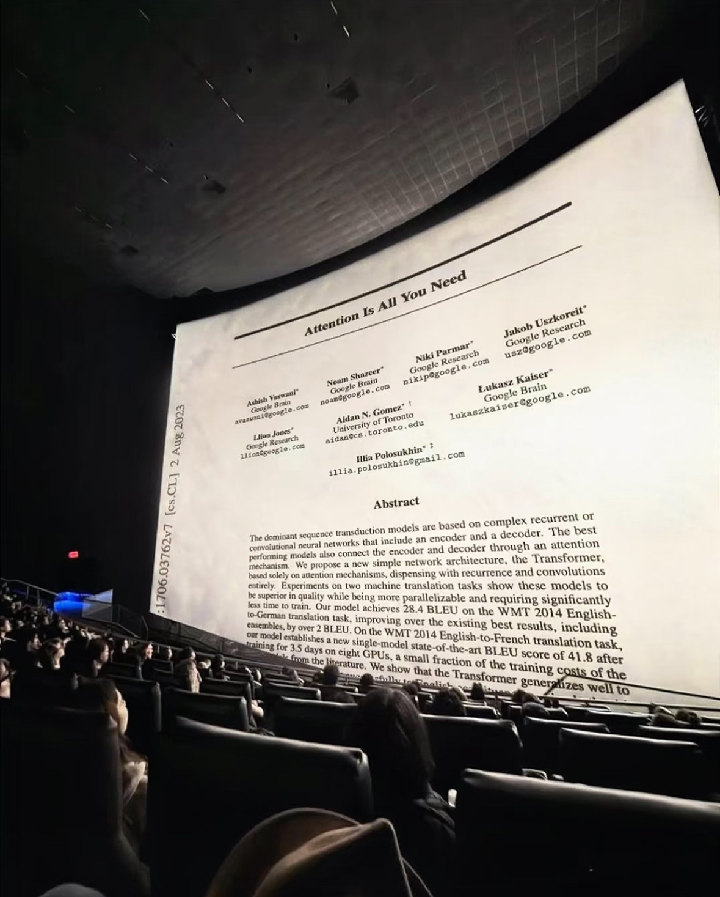

graph TD A[Author in Quarto] --> B[Preview Locally] B --> C[Render to _site/] C --> D[Commit & Push to GitHub] D --> E[Deploy to GU Domains] B -->|Fix issues| A
DSAN-5000 Lab 3 — Project Home
1 Introduction
Welcome to my DSAN-5000 Lab 3 site. This page demonstrates required Quarto features in a clean, professional layout[^ack].
Inline math example: the logistic function \(\sigma(x)=\frac{1}{1+e^{-x}}\) appears frequently in data science.
“In God we trust; all others must bring data.” — W. Edwards Deming
1.1 Highlights (Bulleted List)
- Reproducible site built with Quarto and Git.
- Clean typography, sectioned content, and a working table of contents.
- Illustrative figures, a professional embedded video, and a Mermaid diagram.
- Proper use of relative paths for all assets under
images/.
1.2 Two-Column Overview
Purpose. Provide a concise, professional landing page for Lab 3.
Scope. Demonstrate formatting, math, media embedding, and diagrams.
Outcome. A deployable website that showcases Quarto capabilities.
Key Notes. - Use relative paths (e.g., images/figure-01.png). - Keep alt text and figure captions informative. - Prefer clear, concise academic tone.
Tech Stack. Quarto, Markdown, Mermaid, LaTeX math.
Workflow. Author → Preview → Render → Commit → Push → Deploy.
Professionalism. - Cite credible sources in later pages if needed. - Ensure accessibility (alt text, headings). - Keep filenames lowercase-with-dashes.
2 A Simple Table
A compact Markdown table summarizing the sections:
| Section | Purpose | Done |
|---|---|---|
| Highlights | Bullet list requirements | ✅ |
| Two-Column | Demonstrate column layout | ✅ |
| Math | Inline & block LaTeX | ✅ |
| Media | Images + Video + Mermaid | ✅ |
3 Math
The normal equation (OLS) in block form:
\[ \hat{\beta} \;=\; (X^{\mathsf T}X)^{-1}X^{\mathsf T}y \]
4 Images
Figure 1 shows a IMAX scene; Figure 2 shows a coding scene.


5 Embedded Video
6 Mermaid Diagram
A simple system flow using Mermaid:
7 References
Modern natural language processing is heavily influenced by the Transformer architecture (Vaswani et al. 2017).
Recent advancements such as (DeepSeek-AI et al. 2025) further demonstrate the ongoing progress in large-scale AI models.
References
DeepSeek-AI, Aixin Liu, Bei Feng, Bing Xue, Bingxuan Wang, Bochao Wu, Chengda Lu, et al. 2025. “DeepSeek-V3 Technical Report.” https://arxiv.org/abs/2412.19437.
Vaswani, Ashish, Noam Shazeer, Niki Parmar, Jakob Uszkoreit, Llion Jones, Aidan N Gomez, Łukasz Kaiser, and Illia Polosukhin. 2017. “Attention Is All You Need.” In Advances in Neural Information Processing Systems, edited by I. Guyon, U. Von Luxburg, S. Bengio, H. Wallach, R. Fergus, S. Vishwanathan, and R. Garnett. Vol. 30. Curran Associates, Inc. https://proceedings.neurips.cc/paper_files/paper/2017/file/3f5ee243547dee91fbd053c1c4a845aa-Paper.pdf.